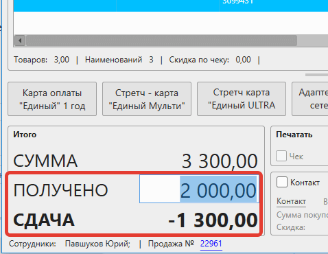

Кассовая программа GBS.Market позволяет осуществлять продажу товаров в долг с последующим внесением платежей по задолженности. На примере ниже рассмотрим, как выполнить оформление продажи в долг и внести платежи по ней.
Полезное видео
Как оформить продажу в долг
Создание продажи
Процесс оформления продажи в долг не сильно отличается от обычной продажи. Различие происходит лишь на этапе выбора способов оплаты.
Добавьте в чек (корзину) товары, которые приобретает покупатель.
Полезные материалы
Установка суммы "Получено"
После того как товары добавлены – необходимо указать, что сумма полученных денежных средств меньше суммы покупки.
Если у вас используется только один способ оплаты, то сумму "получено" необходимо ввести на главной форме.
Значение в поле "Сдача" стало отрицательным – это значит, что продажа будет оформлена в долг.
Если используется несколько способов оплаты, то сумму "получено" можно указать уже после нажатия кнопки "Итог"
Полезные материалы
На скриншоте выше показано, что покупатель вносит 2000 наличными, а отрицательная сдача говорит о том, что продажа оформляется в долг.
Подтверждение продажи в долг
На следующем шаге программа запросит подтверждение оформления задолженности.
Если покупатель не был выбран на главной форме, то необходимо выбрать покупателя для привязки к продаже. Нажмите на ссылку "контакт" и выберите контакт из существующих или создайте нового покупателя.
Например, покупателя можно найти по его номеру телефона.
После выбора контакт будет отображен на форме подтверждения. Нажмите "Сохранить", чтобы завершить оформление продажи в долг.
Печать чека при продаже в долг
Если к программе подключена онлайн-касса или фискальный регистратор, будет напечатан фискальный чек, в котором будет указана информация о факте оформления продажи в долг.
Полезные материалы
Просмотр списка задолженностей
Раздел "Должники"
Просмотреть все продажи, которые оформлены в долг, можно из главной формы, нажав на Контакты – Должники.

Откроется раздел "Должники".
В списке отображаются продажи, которые были оплачены не полностью.
Список контактов
Увидеть суммы задолженностей так же можно через раздел Контакты – Список контактов.
В карточке контакта так же отображаются данные о задолженности.

А по клику на "Сумма долга" можно перейти к раздел "должники", который будет отфильтрован по выбранному покупателю.
Журнал продаж
В журнале продаж можно отфильтровать продажи по статусу оплаты. Например, если выбрать вариант "Полностью или частично неоплаченные", то в списке будут отображены те продажи, которые были оформлены в долг и еще до конца не оплачены.
Сводный отчет
Информация о задолженностях, так же доступна для просмотра в сводном отчете. Отображается сумма выданных задолженностей и сумма внесенных платежей за продажи, оформленные в долг. При клике на "Выдано" откроется раздел "Должники", отфильтрованный по датам, установленным в сводном отчете.
Внесение платежа по задолженности
Оплата задолженности
Чтобы внести платеж по долгу, необходимо открыть раздел "Должники", а затем выбрать продажу и нажать кнопку "внести платеж".
В следующем окне необходимо указать способ оплаты и сумму, которую вносит покупатель. Внесение по задолженности может быть частичным – сдача в таком случае снова будет отрицательной.
Если долг будет погашен полностью, то продажа будет скрыта из раздела "должники"
Печать чека при оплате долга
Если к программе подключена онлайн-касса, а продажа была фискальной, то при внесении платежа по задолженности будет напечатан соответствующий чек.
Полезные материалы
Просмотр внесенных платежей по задолженности
В карточке продажи, которая была оформлена в долг, на вкладке "платежи" можно увидеть, когда, какие суммы и каким способом были внесены платежи по долгу.
Ограничение максимальной суммы долга
Настройка ограничений
По умолчанию сумма задолженности для конкретного покупателя не ограничена. Ограничение на сумму долга можно установить в карточке группы контактов.
Если ограничение установлено, то каждый покупатель из этой группы не сможет приобрести товаров в долг больше, чем указано.
Чтобы совсем запретить продажи в долг, установите значение равным нулю.
Чтобы убрать ограничения – оставьте значение поля пустым.
Предупреждения
Если задолженность контакта при сохранении продажи превысит лимит, то на главной форме будет показано предупреждение в виде знака [!] рядом с суммой долга.

При клике отобразится информация о текущей задолженности и максимально допустимой суммы долга.

А при попытке сохранить продажу с превышением суммы задолженности – программа сообщит об этом и не позволит выполнить операцию.
Ограничение прав доступа
Как и другие действия, внесение платежа по задолженности может быть ограничено правами доступа в карточке группы сотрудников.